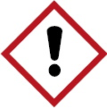
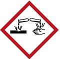

Die Kennzeichnung auf dem Gebinde liefert erste Hinweise auf mögliche Gefährdungen. Die Kennzeichnung besteht aus
Im untenstehenden Beispiel ist die Kennzeichnung der Harzkomponente und des Härters dargestellt. In der Regel sind diese Komponenten wie folgt gekennzeichnet:
Tabelle 1 Typische Kennzeichnung von Epoxidharz-Produkten
| Harz (Komponente A) | Härter (Komponente B) |
 |
 |
|
|
| Signalwort: Achtung | Signalwort: Gefahr |
Zur Kennzeichnung gehören auch die entsprechenden P-Sätze. Diese können herstellerspezifisch unterschiedlich ausfallen.
Das Signalwort "Gefahr" lässt vermuten, dass der Härter die gefährlichere Komponente ist.
In der Praxis können aber beide Komponenten schwere Hauterkrankungen auslösen!
Aufgrund spezieller Inhaltsstoffe, z. B. Lösemittel, werden solche Produkte mit weiteren Piktogrammen und H-Sätzen gekennzeichnet. Detaillierte Informationen sind in WINGISonline zu finden.
Ergänzende Informationen sind aus den Sicherheitsdatenblättern der Epoxidharz-Komponenten zu entnehmen, die die Lieferanten spätestens mit der ersten Lieferung zur Verfügung stellen müssen. In den Sicherheitsdatenblättern sind detaillierte Angaben sowohl zu den möglichen Gefährdungen als auch zu Schutzmaßnahmen bei der Anwendung der Produkte, bei der Lagerung, zum Brandschutz oder zur Entsorgung bzw. zum Transport enthalten.
In Tabelle 2 sind die 16 Abschnitte des Sicherheitsdatenblatts aufgeführt.
Sicherheitsdatenblätter sind mindestens 10 Jahre aufzubewahren. Im Gefahrstoffverzeichnis ist auf das Sicherheitsdatenblatt hinzuweisen, z. B. auf den Ablageort (in Papierform oder digital).2
Tabelle 2 Abschnitte des Sicherheitsdatenblattes
| 16 Abschnitte des Sicherheitsdatenblatts | |
| Abschnitt | Ausgewählte Inhalte |
| 1. Bezeichnung des Stoffs bzw. Gemischs und des Unternehmens | |
| 2. Mögliche Gefahren | Einstufung und Kennzeichnung des Produkts |
| 3. Zusammensetzung/Angaben zu Bestandteilen | Aufzählung der gefährlichen Inhaltsstoffe des Produktes bzw. des Löse- und Verdünnungsmittels |
| 4. Erste-Hilfe-Maßnahmen | |
| 5. Maßnahmen zur Brandbekämpfung | |
| 6. Maßnahmen bei unbeaufsichtigter Freisetzung | |
| 7. Handhabung und Lagerung | In Unterabschnitt 7.3: Angabe von branchenspezifischen Leitlinien z. B. der GISCODE |
| 8. Begrenzung und Überwachung der Exposition/Persönlichen Schutzausrüstungen | In Unterabschnitt 8.1: Angaben der Grenzwerte In Unterabschnitt 8.2: Angaben der geeigneten persönlichen Schutzausrüstung (PSA), wie Schutzhandschuhe, Schutzkleidung, Atemschutz |
| 9. Physikalische und chemische Eigenschaften | Sicherheitstechnische Kennzahlen, z. B. Flammpunkt und Explosionsgrenzen Hinweis auf Explosionsgefährungen |
| 10. Stabilität und Reaktivität | |
| 11. Toxikologische Angaben | |
| 12. Umweltbezogene Angaben | |
| 13. Hinweise zur Entsorgung | |
| 14. Angaben zum Transport | |
| 15. Rechtsvorschriften | |
| 16. Sonstige Angaben | Texte der H- und P-Sätze, Abkürzungsverzeichnis |
2 Auf der Plattform gefkomm.bau.de der BG BAU sind Sicherheitsdatenblätter zu Epoxidharzen für die Bauunternehmen archiviert. Mit dem Programm WINGISonline der BG BAU kann z. B. das Gefahrstoffverzeichnis geführt werden.